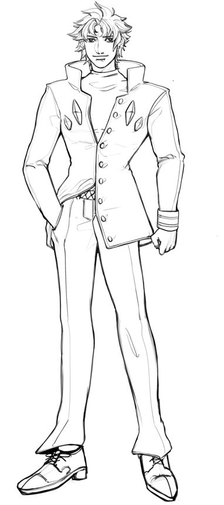
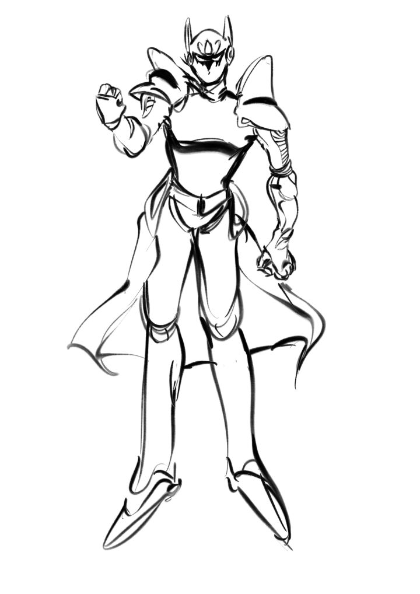

Mizuno Mizu(17)

Mizuno Mizu(水野 水)
Mizuno Mizu (水野 水 Mizuno Mizu) is a core ally in Stardust Crusaders.
A biracial (half-Japanese) delinquent who lives an ordinary life until the Joestar Family's old enemy, DIO, returns. Seeing Jotaro's mother Holy falling ill because of DIO, and heeding Joseph Joestar's call, he travels to Egypt in order to save his friend's mother, experience an unusual life and keep his family safe. He is a Stand User and wields the long ranged Power Type Ocean Blue.
Ocean Blue (オーシャン・ブルー)

| Power |
Speed |
Range |
Durability |
Precision |
Potential |
| A |
B |
A |
C |
C |
D |
Mizuno's long-range humanoid Stand is Oceanblue; this rare Long-range Power Type Stand is able to pull out sharp claws or punch in high speed for a short period; as well as fire a fluid cannon strike (a "Fluids Lanucher"), which immediately causes massive amount of punch damage when contacting the opponents. Its upper body and hands is covered with hard armor which could prevent critical attacks.
Do have a weak self-conscious. It is often could be seen shouting the iconic "BaraBara" (which means smash in Japanese) when doing its quick punching.
Battles Mizuno Encountered in Stardust Crusaders
- Japan, Alley
VS Jotaro(lose)
- Japan, School
VS KAkyoin(win)
- Hongkong, ConvientStore
VS Freud(win)
- Hongkong, Alley
VS Utha(win)
- South Sea, Boat(to Singapore)
VS Captain Tennille(win)
- Singapore, Alley
VS Vins(win)
- Singapore, Cable Car
VS Rubber Soul(win)
- India, Market
VS HolHorse & J.Geil(retired)
(Slidelined for several days)
- Iraq,Radio Stand
VS DJ.INC & Raul(win)
- Arab,Maison
VS Micheal(win)
- Red Sea, Nameless Island
VS Judgement(win)
- Egypt, Dessert
VS N.Doul(lose)
- Egypt, Aswan Hospital
VS Oingo Boingo Brothers(win)
- Egypt, Aswan Street
VS Alysse(win)
- Egypt, Cario
VS Darby(win)
- Egypt, Cario
VS HolHorse(win)
- Egypt, Cario
VS Vanilla Ice(win)
- Egypt, Cario
VS DIO(win)
Other Stuffs
- Mizuno hates eating celery;
- His height is 178, which is 4cm shorter than his wife;
- His favourite Manga is "City Hunter",favourite Anime is "Astro Boy";
- He was too strong for the Manga, so the writer killed him in India but still he was brought back due to Fan-voting and helped everybody survived the trip;
- He inspired Kyo Kusanagi, the KOF hero. Just like Polnerruf's influence on Bennimaru;
Record by Mangaka:
Kishibe Rohan.
Address:
Kishibe Ya
Residential 26, Morio Chou
Japan